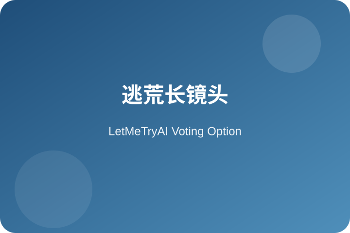
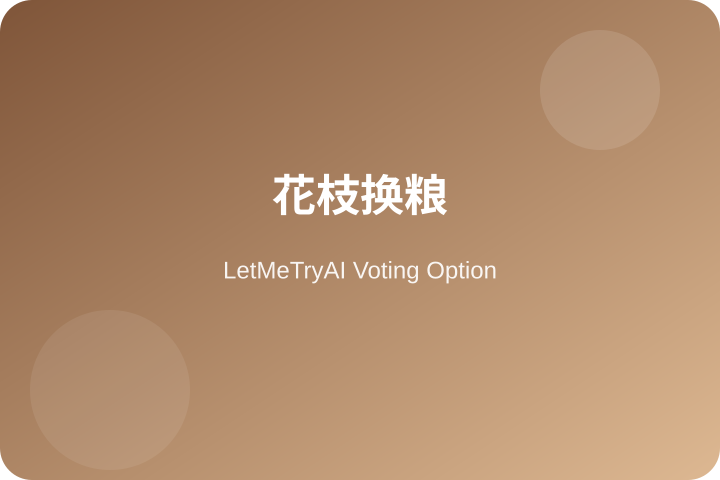
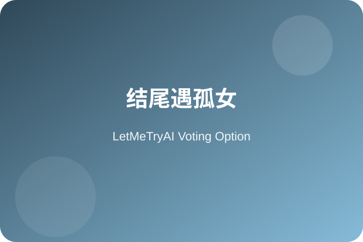
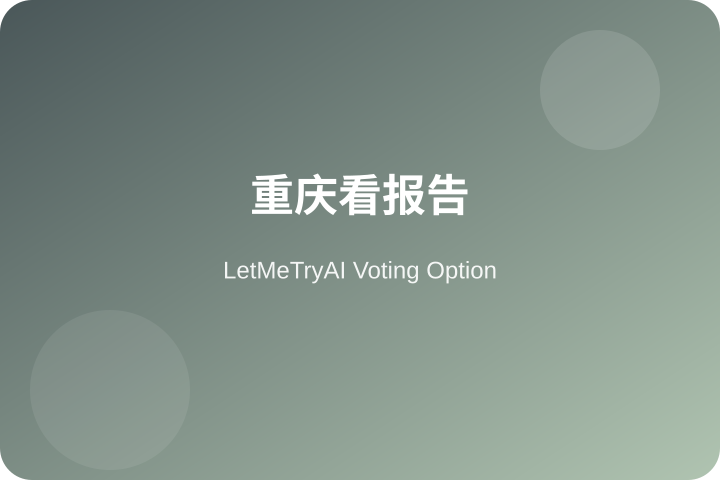

哪场戏更戳中你？

黑压压的逃荒队伍一眼望不到头，老东家牵着毛驴走在人群里，那个镜头把乱世里普通人的无力感全拍出来了。

徐帆演的花枝为了一袋小米把自己卖了，临走前跟栓柱说'我跟你睡过，不亏'，这场戏看一次哭一次。

老东家走到尽头，碰到同样没了家人的小女孩，两人相依为命往南走，那个回望让观众忽然懂了什么叫'活着'。

蒋介石在办公室里看到河南灾情的报告，镜头没给一句台词，却把一个时代的决策与人性冲突全压在那几张纸上了。
正在获取最新数据...